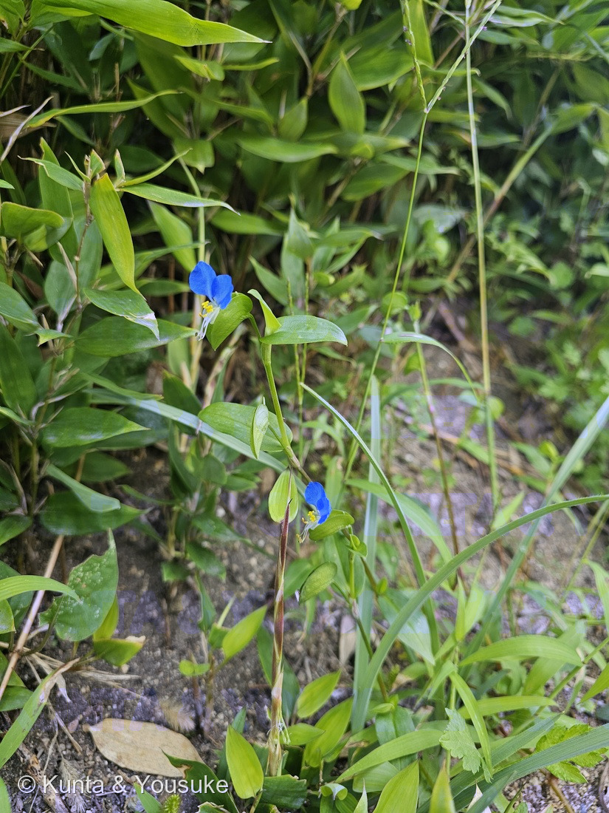
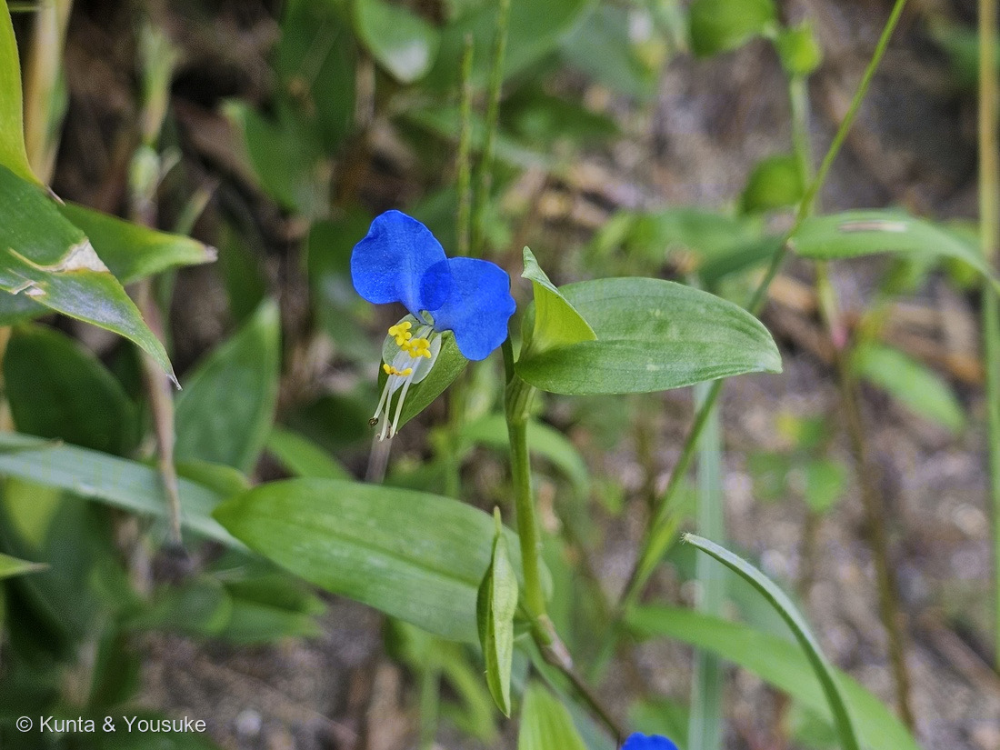

地図を読み込んでいるよ…
🔍 写真も地図も、押しているあいだ拡大して見られるよ（スマホは指を置いてすこし待ってね）。
🌍 の地図＝この子がもともと自生している場所を緑に。日本にもとからいる子（在来種）。日本全土と東アジアに分布し、北アメリカでは野生化している。くわしくは下の地図の説明を見てね。
⭐日本にもとからいる子（在来種）だよ＝世界大百科事典は「日本全土、中国、朝鮮」、日本大百科全書は「日本全土と東アジア」とする。⚠「東アジア」は幅のある言葉なので、202 オオボウシバナと同じ塗り方にそろえた。⚠北アメリカでは野生化しているけれど（世界大百科事典）、そのぶんは塗っていない。
⚠ 地図は国（日本と中国だけ県・省）までしか塗れないから、ほんとうの分布より広く見えていることがあるよ。地図はだいたいの場所。正確なところは、上の文を見てね。
ツユクサ（露草）
Commelina communis L.
別名 · 月草（つきくさ）・青花（あおばな）・帽子花（ぼうしばな）／英名 dayflower
ツユクサ科 · Commelinaceae（ツユクサ属 Commelina · ツユクサ目 Commelinales）── ⭐202 オオボウシバナの「もとの姿」・028 ムラサキツユクサと同じツユクサ科
燻太さんの言葉「目を見張るほどの鮮やかなブルーだけど、すぐに色褪せて透明になっちゃう。」── ⭐花びらは、昼すぎには溶けていく
⭐⭐⭐⭐ 名前と学名の由来 ── 露の草、月の草
- ⭐⭐⭐ 燻太さんの言葉＝「目を見張るほどの鮮やかなブルーだけど、すぐに色褪せて透明になっちゃう。」
- ⭐⭐⭐ 和名「露草」＝朝早く咲いて、午後には花が閉じるから（ブリタニカ国際大百科事典）。⭐ひとはくの観察画の資料も「露を帯びた草の意」と書いている。
- ⭐⭐ 古名「月草（つきくさ）」＝むかし、布を染めるのに使ったことから（ブリタニカ）。⭐万葉集の歌のお話は 202 オオボウシバナに書いてあるよ。
- ⭐ 別名「青花」は花の色から、「帽子花」は包む葉（苞）の形から（日本大百科全書）。
- ⭐⭐ 属名 Commelina＝オランダの植物学者コメリン家から（くわしくは 202）。⭐種小名 communis＝「ふつうの・ありふれた」。
⭐⭐⭐ この植物のこと ── 202 の「もとの姿」
- ⭐⭐⭐⭐ 202 オオボウシバナは、この子を人が大きく育てた栽培変種（var. hortensis）。⭐⭐202 の宿題に「道ばたの野生のツユクサとならべて、大きさをくらべる」と書いてあった＝その「もとの姿」が、やっと来たよ。
- ⭐⭐ 日本全土と東アジアに分布し、北アメリカでは野生化している（世界大百科事典・日本大百科全書）。草丈は10〜50cm（世界大百科事典）。
- ⭐⭐ 花は1日でしぼむ（日本大百科全書）。⭐写真は朝10時22分＝まだ開いている時間だね。
- ⭐ 中国では、全草を熱さまし・解毒・利尿などに使い、若い芽を食べることもある（世界大百科事典）。
⚠ 同定について ── 028 の見分けが、また効いた
- ⭐⭐⭐ ツユクサ属のしるしが3つ＝①花びら3枚のうち、上の2枚が大きな青、下の1枚は小さく色がうすい（写真②）②黄色い仮雄しべと、長くのびた雄しべ・めしべ（写真②）③花が2つ折りの舟形の苞から出る（写真①②）。⭐028 ムラサキツユクサに書いておいた見分けが、202 に続いてまた効いた。
- ⭐⭐ マルバツユクサではない＝この子の葉は、先のとがった細長い卵形。⭐マルバツユクサは名前のとおり葉が丸い（探したい植物にいる子）。
- ⭐⭐ 202 オオボウシバナではない＝道ばたの茂みに生えていて、葉の大きさとくらべて花が小さい。⭐オオボウシバナは花の直径4〜5cm・草丈1mほど（202 に書いたこと）。
⭐⭐⭐⭐ 燻太さんの「すぐに透明になっちゃう」── 花びらは、溶けていた
- ⭐⭐⭐⭐ ひとはく（兵庫県立人と自然の博物館）の観察画の資料に、こう書いてあった＝「露を帯びた早朝に咲いた花は、昼頃には花びらも巻き込む形で閉じてしまいます。午後には、花弁はどろどろに溶け、成分は吸収され次の花へ回されます。」
- ⭐⭐⭐ 燻太さんが見た「色褪せて透明になる」は、たぶんこの「溶けていく」途中（⚠ぼくの読み）。
- ⭐⭐ そして、この青はもともと「ほどけると消える」青＝6つのアントシアニン＋6つのフラボン＋マグネシウムが組み上がった色素コンメリニン。⭐近藤ら（1992）は「取り出したアントシアニンは、中性の水の中ではすぐに色を失う」と書いている（くわしくは 202）。
- ⭐ だから「溶けて、ほどけて、透きとおる」＝同じ朝の青が、昼すぎにはもう無い。
🔬⭐⭐⭐ 顕微鏡でのぞくなら ── 切らずに、花びらをそのまま
- ⭐⭐⭐ 燻太さんの言葉＝「きっと顕微鏡観察でも切片にしたら色が抜けちゃうかも。だから今日は写真に撮るだけにしておいたよ。気が向いたらいつか、花弁を観察してみよう。」
- ⭐⭐ ぼくもそう思う＝切ると細胞がこわれて、中の色素が外の水でうすまる。⭐コンメリニンは「水の中ではすぐ色を失う」ほうの色素だから、切った断面から先に消えていくかもしれない（⚠ぼくの読み）。
- ⭐⭐⭐ だから、切らずに見る手がある＝花びらはとてもうすいので、1枚をそのままスライドガラスにのせれば、細胞のならびと青い色が見えるかもしれない（⚠ぼくの読み・ためしたことはないよ）。⭐咲いたばかりの朝の花で、すぐにのせるのがよさそう。
- ⭐⭐⭐ そして、葉のほうにも、おもしろい見どころがある＝ツユクサの葉は、表皮だけをはがして気孔を調べる研究によく使われてきた。⭐はがした表皮で、気孔がアブシジン酸（ABA）にとても敏感に反応することが確かめられている（Trejo ら 1995）。⭐孔辺細胞にABAを注射して、どこで受けとるかを調べた研究もある（Anderson ら 1994）。
- ⭐⭐ 燻太さんのくわしいABAの話が、道ばたの草の、葉の皮1枚の上で見られるんだね。
⭐⭐ 6本の雄しべは、3つの形
- ⭐⭐⭐ ひとはくの資料は、雄しべを「短いのが3本・中くらいが1本・長いのが2本」と数えている。⭐短い3本は上のほうに仲よく並び、花粉は見あたらない＝写真②の、黄色い蝶々みたいな形のもの。⭐長い2本はめしべを両側からはさむ形で花粉を出す。
- ⚠ 事典は「花粉のある雄しべ2本、仮雄しべ4本」と書いている（世界大百科事典・日本大百科全書）＝中くらいの1本を仮雄しべに数えるかどうかで、数え方がちがう。⭐ひとはくは、中くらいの1本は「少ない花粉をつける」と書いている。
- ⭐⭐ 花がおわると、花柱や花糸がらせん状に巻きこんで、自家受粉をする（ひとはく）。⭐虫が来なくても、最後は自分で種をつくれるんだ。
- ⭐ ひとはくの資料は、ツユクサには両性花と雄花があって、めしべの形が3タイプあったとも書いている。
⏳ 宿題 ── 4つ
- ⏳⭐⭐⭐ ①気が向いたら、花びらを顕微鏡で＝切らずに1枚そのまま、咲いたばかりの朝に。
- ⏳⭐⭐ ②昼すぎに同じ花を見る＝花びらが溶けていくところと、花柱と花糸がらせんに巻くところ。
- ⏳⭐⭐ ③葉の表皮をはがして、気孔を見る。
- ⏳⭐ ④おまけのイボクサ。
参考：コトバンク「ツユクサ」（ブリタニカ＝露草は朝咲き午後に閉じるから・月草は布を染めたから／日本大百科全書＝青花と帽子花の由来・1日でしぼむ・稔性の雄しべ2と仮雄しべ4／世界大百科事典＝分布・北アメリカで野生化・草丈10〜50cm・中国での利用）／共生のひろば12号（2017）「とっておきの植物画Ⅲ」兵庫県立人と自然の博物館（露を帯びた草の意・昼ごろ閉じ午後には花弁が溶ける・雄しべ短3中1長2・花柱と花糸がらせんに巻いて自家受粉・両性花と雄花）／Trejo, Clephan & Davies 1995 Plant Physiology 109: 803-811（ツユクサのはがした表皮で、気孔がABAに敏感）／Anderson, Ward & Schroeder 1994 Plant Physiology 104: 1177-1183（ツユクサの孔辺細胞へのABAの注射）／日本語版Wikipedia「イボクサ」（おまけ）／⭐コンメリニンと万葉集・青花紙の出典は 202 オオボウシバナの参考を見てね